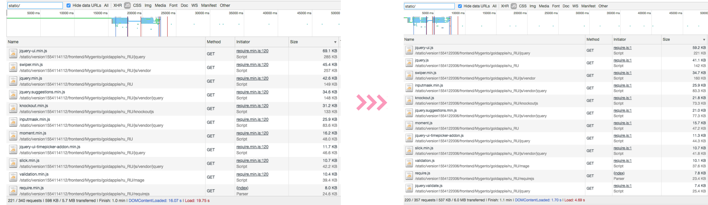

+
 Modern DevTools
Modern DevTools
+
Коммуникация
Ася Бахнарь и Влад Слесаренко
(Пути Оптимизации неисповедимы)
Asya & Laslo
+
 Modern DevTools
Modern DevTools
+
Коммуникация

— часть страницы, поддерево DOM. Отрисовывается независимо, компонуется в GPU
transform: translateZ(0))<video>с включенным h/a (Hardware acceleration)<canvas> с 3D или 2D с включенным h/az-index)will-change
BRO: transform, opacity и filter - пропускают этапы Layout и Paint, обработаны напрямую через GPU.

window.performance.mark('my_mark');
window.performance.measure('u text', 'domComplete', 'my_mark');
performance.getEntriesByType('mark');
performance.getEntriesByType('measure');
text-overflow: clip | ellipsisjquery.dotdotdot.js
deprecated -> dotdotdot-js
shave.js
-webkit-line-clamppageSpeed поднялся на 2 в мобилке и на 6 на десктопе
npm i -g uglify csso html-minify
htmlminifycssouglify
ffmpeg -i 1-test.gif -movflags faststart -pix_fmt yuv420p -vf "scale=trunc(iw/2)*2:trunc(ih/2)*2" video.mp4
| .gif | .mp4 | |
|---|---|---|
| размер | 1.4 MB | 118 КБ |
ffmpeg -i input.mp4 -movflags faststart -acodec copy -vcodec copy output.mp4
<img srcset="simple@2x.png 2x, simple.png 1x" src="simple.png" alt="">
picture + picturefill (для IE)<picture>
<source srcset="banner_m.jpg, banner_m@2x.jpg 2x" media="(max-width: 768px)">
<source srcset="banner_t.jpg, banner_t@2x.jpg 2x" media="screen and (min-width: 768px) and (max-width: 1024px)">
<source srcset="banner.jpg, banner@2x.jpg 2x" media="screen and (min-width: 1025px)">
<img srcset="banner.jpg" alt="">
</picture>
<picture>Что надо бы сделать: или запилить таску с gulp-responsive или скрипт с ImageMagick (ресайз + оптимизация - #81193)
npm i -g svgo<picture>
<source srcset="img/amp-small.webp" type="image/webp">
<img src="img/amp-small.jpg">
</picture>


— ленивая загрузка (данные подгружаются только при необходимости, либо просто отложенно)
— на картинках, не попадающих в область видимости (вьюпорт, первый экран)
— часть разметки подгружается аяксом, отдельно от основного html страницы. Backend + Frontend
| можно | не стоит |
|---|---|
| запрос кэшируется варнишем (например, в м2) | запрос идет в мадженту (даже если сам блок в ней закэширован) |
| много html и dom-элементов | html небольшой |
| ресурсоемко на бэке | |
Примеры:
|
Примеры:
|
— часть css (обычно ненужная для первого экрана) подгружается аяксом, отдельно от основного html страницы
касается всяких классов типа hide-on-* или only-*
проверка надобности разметки на этапе обработки бэкендом
mobiledetect/mobiledetectlib и прочие
webpack-bundle-analyzer
npm i webpack-bundle-analyzer
npm install -g npx
env NODE_ENV=production webpack --json > stats.json
npx webpack-bundle-analyzer stats.json
| Extension | Browser support | |
|---|---|---|
| TrueType | ttf | Все, кроме IE8- |
| OpenType | eot | IE6+ |
| WOFF | woff | Все, кроме Android Browser 4.3- и IE8- |
| WOFF2 | woff2 | Все современные, кроме IE |
Для конвертации: npm i -g ttf2eot ttf2woff ttf2woff2
@font-face {
font-family: "Open Sans Light";
font-weight: 300;
font-style: normal;
src: local("Open Sans Extra Light"),
local("OpenSans-Light"),
url("open-sans/OpenSans-Light.woff2") format("woff2"),
url("open-sans/OpenSans-Light.woff") format("woff"),
url("open-sans/OpenSans-Light.ttf") format("truetype");
}
Internet Explorer и Edge используют FOUT и отображают запасные шрифты, пока веб-шрифт не закончит свою загрузку. Все остальные браузеры используют FOIT и прячут текст во время загрузки веб-шрифтов.
font-displayauto — обычно это поведение block<link rel="prefetch" href="https://olololo.ru/jquery.min.js" as="script"><link rel="preload" href="https://olololo.ru/fnt/fnt_medium.woff2" as="font">
хорошая статья
Пишут что у Google mod_pagespeed и Cloudflare нет конфликтов
| HTTP1.1 | HTTP2 | |
|---|---|---|
| head-of-line blocking | не больше 6ти запросов за раз | мультиплексирование + приоритезация потоков (собственная) |
| uncompressed headers | сервер сжимает только тело запроса, но не заголовки | HPACK |
| доп фичи | SERVER PUSH (nginx 1.13.9) |
Ухудшается эффективность кэширования

Подробности в задаче на редмайне и в readme
Максим Халилов и Ласло
↑ от худшего к лучшему сверху вниз
Потому что мердж и бандлинг выводят на страницу весь js, который есть для текущей темы. Он много весит и долго выполняется
Было решено разбивать (выключив мердж и бандлинг в настройках конфигурации)
Таск ходит по файлам в pub/static и подменяет их минифицированной версией
Благодаря uglify кастомная сжимала лучше, скрипты весили меньше
RequireJs поддерживает бандлинг из коробки. Нужно просто задать конфиг
Далее надо было собрать сами эти файлы. Возможные решения:
| мобилка (cек) | десктоп (cек) | |
|---|---|---|
| до | 10.86 | 4.97 |
| после | 5.41 | 3.03 |
| быстрее на | ~50% | ~39% |
| мобилка (cек) | десктоп (cек) | |
|---|---|---|
| до | 11.62 | 4.97 |
| после | 6.36 | 3.25 |
| быстрее на | ~45% | ~35% |
| мобилка (cек) | десктоп (cек) | |
|---|---|---|
| до | 17.74 | 5.61 |
| после | 8.47 | 3.92 |
| быстрее на | ~52% | ~30% |